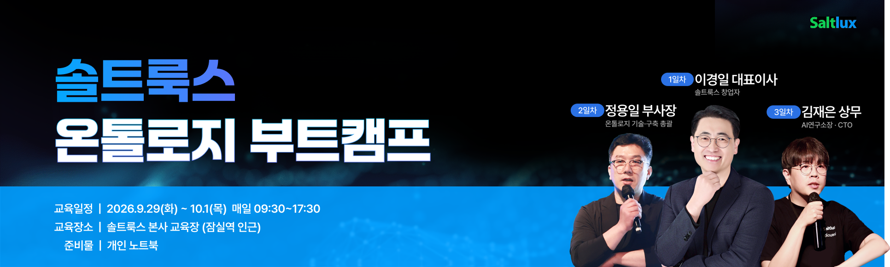

1일차 · 9월 29일(화)
이경일대표이사
솔트룩스 창업자
온톨로지 · 뉴로-심볼릭 AI
데이터 패브릭 · 구축 방법론
데이터 패브릭 · 구축 방법론

솔트룩스 창업자
온톨로지 기술·구축 총괄
AI연구소장 · CTO
일차를 누르면 세부 시간표를 확인할 수 있습니다.
| 시간 | 교육 내용 |
|---|---|
| 09:30–10:40 | 인공지능과 뉴로-심볼릭 AI인공지능 기술 기반과 온톨로지 개념 · 온톨로지와 뉴로-심볼릭 기술의 부상 |
| 10:50–12:00 | 온톨로지와 데이터 패브릭 플랫폼데이터 파이프라인의 중요성 · 온톨로지 기반 데이터 패브릭 · 온톨로지 파운드리 시스템의 이해 |
| 12:00–13:10 | 점심시간 |
| 13:10–14:20 | 온톨로지 언어와 지식 표현 및 추론지식 표현과 온톨로지 언어 · Cypher, RDF/OWL과 SWRL 등 · 온톨로지 추론의 개념과 활용 |
| 14:20–14:40 | 쉬는시간 |
| 14:40–15:50 | 온톨로지와 뉴로-심볼릭 시스템 구축 방법론의 이해미들-아웃 온톨로지 구축 방법론 · 솔트룩스 이중나선 구축 방법론 · 구축 방법론 workshop |
| 15:50–16:00 | 쉬는시간 |
| 16:00–17:00 | 온톨로지/뉴로-심볼릭 유즈케이스온톨로지 구축 사례들, 기술의 이해 · 각종 국내외 온톨로지 및 뉴로-심볼릭 시스템 구축 사례 소개 |
| 17:00–17:30 | 마무리 및 질의응답 |
| 시간 | 교육 내용 |
|---|---|
| 09:30–10:30 | 온톨로지 기술 요소온톨로지 개념 요약 · RDF, OWL, SPARQL |
| 10:30–11:30 | 모델링 실습 1 · 모델개념화ORSD, CQ · 개념과 관계 도출 · 개념모델 구성 |
| 11:30–12:30 | 모델링 실습 2 · 모델명세화모델링 도구를 통한 모델 구축 |
| 12:30–13:30 | 점심시간 |
| 13:30–14:30 | 데이터변환 실습 1 · 이론변환규칙과 데이터 포맷 이해 · 데이터 변환 도구 설치 |
| 14:30–15:30 | 데이터변환 실습 2변환규칙 설계 및 데이터 변환 |
| 15:30–16:30 | 데이터적재 실습저장소 설정 및 사용법 |
| 16:30–17:00 | SPARQL 실습SPARQL 작성 및 SPARQL Endpoint 실습 |
| 17:00–17:30 | 마무리 및 질의응답 |
| 시간 | 교육 내용 |
|---|---|
| 09:30–10:30 | 온톨로지부터 Agentic AI까지온톨로지와 에이전트 연계 · 파운드리 플랫폼 · 프로젝트 사례진행 · 김재은 CTO |
| 10:30–11:30 | 온톨로지 기반 에이전트온톨로지 응용을 위한 에이전트 설계 및 구축진행 · 김재은 CTO |
| 11:30–12:30 | 온톨로지 지식 그라운딩온톨로지 지식 활용 · T2SQL, T2SPARQL진행 · 김재은 CTO |
| 12:30–13:30 | 점심시간 |
| 13:30–14:30 | 에이전트 스튜디오 1에이전트 개발 실습진행 · Labs 연구원 |
| 14:30–15:30 | 에이전트 스튜디오 2에이전트 개발 실습진행 · Labs 연구원 |
| 15:30–16:30 | 에이전트 스튜디오 3에이전트 개발 실습진행 · Labs 연구원 |
| 16:30–17:00 | 도큐먼트 스튜디오비정형 문서 데이터 파이프라인진행 · Labs 연구원 |
| 17:00–17:30 | 마무리 및 질의응답 |
개인 노트북은 2·3일차부터 사용할 예정입니다.
해당 일차에 노트북과 충전기를 함께 지참해 주세요.
사전에 대여 의사를 회신해 주신 분에 한해
대여 노트북을 제공합니다. 실습이 있는 2·3일차에 제공합니다.
수업 중 도움이 필요하시면 현장 운영매니저에게 말씀해 주세요.
SSID Saltlux_Guest
비밀번호 guest123!@#
정수기는 교육장 기준 우측 냉장고 옆에 있습니다.
쓰레기통은 정수기 아래 또는 남자 화장실 방향을 이용해 주세요.
교육장 기준 우측은 여자 화장실, 좌측은 남자 화장실입니다.
건물 밖 지정된 외부 흡연구역을 이용해 주세요.
해다미는 솔트룩스 임직원을 위한 사내 복지시설입니다.
외부 방문객용 결제 시스템이 마련되어 있지 않아 교육 참가자분들의 일반 결제 이용이 어려운 점 양해 부탁드립니다.
교육 기간 3일 동안 카페 이용 쿠폰을 제공합니다.
출석 확인 시 받은 쿠폰을 해다미 매니저에게 제출하시면 이용할 수 있습니다.
쿠폰을 받지 못하신 분은 현장 운영매니저에게 말씀해 주세요.
교육 종료 후 수료증 발급을 원하시는 분은 010-8908-5505로 이메일 주소 및 소속/성함을 문자로 남겨 주세요.
교육 종료 후 10/2(금) 일괄 발송 예정입니다.
교육 중 간헐적으로 짧은 영상 촬영이 진행될 예정입니다.
수강생 여러분의 뒷모습 위주로 촬영하며, 얼굴이 나오는 경우에는 모자이크 처리할 예정이오니 양해 부탁드립니다.
교육 3일차에는 교육 만족도 관련 인터뷰 영상 촬영을 진행할 예정입니다.
인터뷰에 참여해 주신 분께는 상품권을 지급할 예정이니, 참여 의사가 있으시면 현장 운영매니저에게 말씀해 주세요.
보내주시는 의견은 더 나은 교육 프로그램을 만드는 데 소중히 활용하겠습니다.